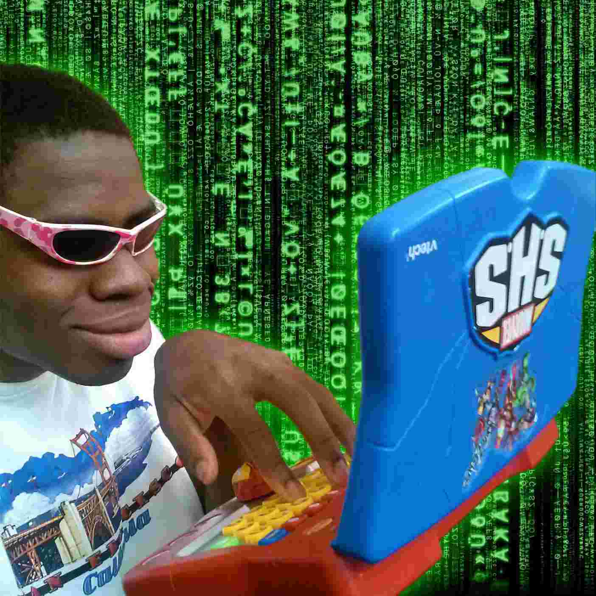

_
_

Simple Portfolio Website
A simple, visually appealing portfolio website that introduces me, showcases my skills, and highlights my passion for building practical solutions. Built to reflect my journey as a computer science student with a focus on technology and creativity.
Made With :
HTML
CSS

NETFLIX Clone
A fully functional Netflix-inspired web application that replicates the platforms design and features.
Made With :
HTML
CSS